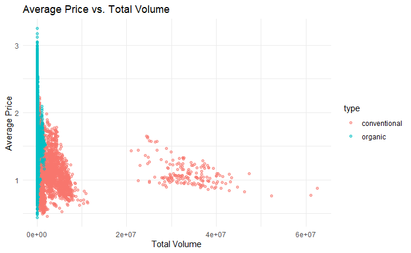

| Case Study 05: Analyzing Avocado Price Trends and Consumer Behavior
|
Follow Your Own Case Study Path

Introduction
Welcome to your very own case study! This is different from all the other cases in this course, as it gives you the opportunity to choose a business question that is of particular interest to you. As a result, finding datasets and conducting analysis will be more complex and will require you to make many decisions on your own.
By the end of this lesson, your goal is to have a portfolio-ready case study. To make sure you are set up for success, it is recommended that you complete one of the more structured case studies first. In addition, be sure to read the included scenario and follow the Case Study Roadmap, which details the steps of the data analysis process: ask, prepare, process, analyze, share, and act.
Once your case study is complete, download the packet and reference the details of your work anytime. Then, when you begin your job hunt, your case study will be a tangible way to demonstrate your knowledge and skills to potential employers.
Scenario
You are a junior data analyst working for a business intelligence consultant. You have been at your job for six months, and your boss feels you are ready for more responsibility. He has asked you to lead a project for a brand new client — this will involve everything from defining the business task all the way through presenting your data-driven recommendations. You will choose the topic, ask the right questions, identify a fresh dataset and ensure its integrity, conduct analysis, create compelling data visualizations, and prepare a presentation.
Case Study Deliverables
Ask
Five questions will guide your case study:
- What type of company does your client represent, and what are they asking you to accomplish?
- What are the key factors involved in the business task you are investigating?
- What type of data will be appropriate for your analysis?
- Where will you obtain that data?
- Who is your audience, and what materials will help you present to them effectively?
You will produce a report with the following deliverables:
- A clear statement of the business task you have selected to investigate
- A description of all data sources used
- Documentation of any cleaning or manipulation of data
- A summary of your analysis
- Supporting visualizations and key findings
- Based on what you discover, a list of additional deliverables you think would be helpful to include for further exploration
- Your top high-level insights based on your analysis
Note: Completing this case study within a week is a good goal.
To begin, spend some time brainstorming ideas. An effective presentation should be about 30 minutes long, so make sure your business task isn’t too simple or too complex. Below are three examples of business tasks that you can use for inspiration.
- Rank university sports teams: Imagine a business wants to make endorsements for players for various sports teams. Explore data over the past few years, consider which teams are ranked in the top five at the beginning of their season and how rankings shift over time. Which teams show potential for endorsements?
- Expand the vacation rental market: Imagine a real estate management company wants to determine if they should expand into a new geographic area. Use public data from Airbnb to answer questions about the vacation rental market in a specific area. Investigate how neighborhoods or amenities influence Airbnb prices, what listings are rented most frequently, and where super hosts are located.
- Consider consumer purchase patterns and weather patterns: Weather can have an impact on consumer interest in a variety of products. Does colder weather grow demand for scarves and soup? Does warmer weather drive sales of fans and
flip flops? And does severe weather increase consumption of bottled water and batteries? Use public data from the National Oceanic and Atmospheric Administration to discover insightful weather-related purchasing patterns.
Note: These examples don’t have an immediate connection to the datasets so as to not influence your choice of business tasks based on data.
Use the following Case Study Roadmap as a guide:
Case Study Roadmap - Ask |
Guiding questions - What topic are you exploring?
- What is the problem you are trying to solve?
- What metrics will you use to measure your data to achieve your objective?
- Who are the stakeholders?
- Who is your audience?
- How can your insights help your client make decisions?
|
Key tasks - Identify the business task
- Determine key stakeholders
- Choose a dataset
|
4. Establish metrics |
Deliverable A clear statement of the business task you have selected to investigate |
1. What topic are you exploring?The dataset focuses on avocado prices and sales across various regions in the U.S. I could explore how avocado prices fluctuate based on factors like region, type (organic vs. conventional), and season. 2. What is the problem you are trying to solve?The business task could involve understanding pricing trends and sales patterns to help a grocery retailer or supplier optimize pricing strategies, inventory planning, or marketing campaigns based on avocado demand and price changes. 3. What metrics will you use to measure your data to achieve your objective?Key metrics could include: - Average price per avocado
- Total sales volume (units sold)
- Sales revenue
- Price variance (across regions or time periods)
- Market share of organic vs. conventional avocados
4. Who are the stakeholders?Potential stakeholders include: - Retailers who want to optimize their pricing strategies.
- Suppliers who need to understand demand trends.
- Marketing teams who may want to develop promotions based on price and sales trends.
5. Who is your audience?The audience could be business decision-makers like: - Retail managers looking to adjust pricing based on trends.
- Supply chain managers interested in ensuring the right stock levels are maintained.
- Marketing teams who want data to support promotions.
6. How can your insights help your client make decisions?Insights from the analysis can help my client: - Adjust pricing strategies for different regions or times of year.
- Identify sales patterns and optimize inventory management.
- Understand the impact of organic versus conventional products on sales and pricing.
Key tasks:- Identify the business task: Define the purpose of analyzing avocado prices, such as improving pricing strategy or optimizing stock.
- Determine key stakeholders: Identify who in the business would benefit from the insights.
- Choose a dataset: Use the "Avocado Prices" dataset.
- Establish metrics: Set the performance metrics (e.g., sales revenue, price variance, etc.).
Deliverable:A clear statement could be:
"The business task is to analyze avocado price fluctuations and sales patterns to inform pricing strategies, inventory management, and promotional campaigns for a U.S. grocery retailer." |
Prepare
Find data that is appropriate for your analysis from any credible dataset. There are numerous public datasets that you can use. You have already encountered some of them throughout this program:
- World Happiness Report (made available by Sustainable Development Solutions Network under a CC0 license): Regional data about overall happiness that contains interesting insights into the relationship between happiness, money, health, and many other metrics.
- Avocado Prices (made available by Justin Kiggins under a CC0 license): Historical data about avocado prices and sales in grocery stores throughout the United States.
- Movies Dataset (made available by Rounak Banik under a CC0 license): Metadata about 45,000 movies, with data points including cast, crew, plot keywords, budget, revenue, ratings, release dates, languages, production companies, and more.
- Amazon Top 50 Best Selling Books (made available by Souter Saalu under a CC0 license): Data about Amazon's bestselling books from 2009 to 2019, categorized into ction and non ction.
My Choise for this Case Study |
|
Once you have decided on a dataset, gather and store the data appropriately, clean the data, and make sure it is reliable and
error-free. Document your process, as clients often ask to see both raw and cleaned data. Now, prepare your data for analysis using the following Case Study Roadmap as a guide:
Case Study Roadmap - Prepare |
Guiding questions - Where is your data located?
- How is the data organized?
|
- Are there issues with bias or credibility in this data? Does your data ROCCC?
- How are you addressing licensing, privacy, security, and accessibility?
- How did you verify the data’s integrity?
- How does it help you answer your question?
- Are there any problems with the data?
|
Key tasks - Download data and store it appropriately.
- Identify how it’s organized.
- Sort and lter the data.
- Determine the credibility of the data.
|
Deliverable A description of all data sources used |
1. Where is your data located?The dataset can be downloaded from Kaggle, specifically from the link provided:
Avocado Prices Dataset - Kaggle 2. How is the data organized?The dataset consists of historical data on avocado prices and sales in grocery stores across various regions in the U.S. The data is typically organized into a CSV file with columns such as: - Date: The date of the record.
- AveragePrice: The average price of avocados for that particular region and date.
- TotalVolume: The total volume of avocados sold.
- 4046, 4225, 4770: These are product codes for different avocado types (e.g., large, organic).
- Region: The region of the sale.
- Type: The type of avocado (organic or conventional).
3. Are there issues with bias or credibility in this data? Does your data ROCCC?- Bias: There could be bias in how the data represents regional pricing or sales. For instance, certain regions might dominate in terms of sales, which may not provide a holistic view.
- Credibility: The dataset is sourced from reputable outlets and provided by Kaggle with clear data lineage. However, some concerns could arise regarding the sampling methods and how they represent actual market conditions.
- ROCCC (Relevant, Original, Complete, Current, and Cited): The data is:
- Relevant: Yes, it pertains directly to avocado prices and sales, which fits my business task.
- Original: It appears to be original, sourced directly from grocery sales data.
- Complete: The dataset covers multiple years and includes relevant columns for analysis.
- Current: The data spans several years but could lack the most up-to-date records.
- Cited: Yes, the dataset is well-cited on Kaggle.
4. How are you addressing licensing, privacy, security, and accessibility?- Licensing: The dataset is made available under a CC0 (Creative Commons Zero) license, meaning it is free to use for commercial and non-commercial purposes.
- Privacy: No personal or sensitive data is included in the dataset, so privacy concerns are minimal.
- Security: As the dataset is stored on Kaggle, it is secured on their platform.
- Accessibility: The dataset is publicly available and can be downloaded by anyone with a Kaggle account, ensuring high accessibility.
5. How did you verify the data’s integrity?- Verifying Integrity: I would perform initial checks on the dataset, such as:
- Null values: Checking for missing or incomplete records.
- Outliers: Identifying unusually high or low values that may indicate data errors.
- Consistency: Ensuring that dates and other fields are consistent across the dataset.
- Duplicates: Verifying that there are no duplicate records.
6. How does it help you answer your question?The data will help answer the key question of understanding avocado price trends, sales patterns, and the impact of factors like seasonality, region, and product type. By analyzing the sales volume, price fluctuations, and regional differences, I can derive actionable insights for improving pricing and inventory strategies for grocery retailers. 7. Are there any problems with the data?Possible issues could include: - Data Granularity: Depending on how the data is structured, there may be a lack of finer details, such as specific pricing at a product level or more granular geographic breakdowns.
- Missing Data: Some regions may have sparse records, potentially affecting the overall analysis.
- Date Range: If the data doesn’t extend into the most recent years, it may not reflect current market conditions.
Key Tasks- Download data and store it appropriately: Download the CSV file from Kaggle and store it securely for analysis.
- Identify how it’s organized: Understand the column structure and data types to facilitate easy manipulation during analysis.
- Sort and filter the data: Clean and sort the data based on key dimensions like region, date, or type of avocado.
- Determine the credibility of the data: Verify the data’s accuracy, source, and potential biases.
DeliverableI can present a detailed description of the Avocado Prices dataset, including: - Source (Kaggle, under CC0 license).
- The structure of the data (columns, types, and meaning).
- Measures taken for data integrity, such as checking for missing values and duplicates.
- Any potential biases, such as overrepresentation of certain regions or time periods.
|
The Avocado Prices dataset, made available by Justin Kiggins on Kaggle under a CC0 license, contains historical data about avocado prices and sales across various grocery stores in the United States. It is specifically designed to provide insights into pricing trends, sales volumes, and other relevant factors associated with the avocado market. This dataset is ideal for analyzing pricing behavior and sales patterns for avocado varieties, including organic and conventional types, over different time periods and regions.
1. Dataset OverviewSource: The dataset is hosted on Kaggle, under a CC0 (Creative Commons Zero) license, meaning it is free to use for both commercial and non-commercial purposes.Columns: The dataset contains multiple columns that detail different aspects of avocado sales, including price, volume sold, and regional information.
2. Data StructureThe dataset consists of a single CSV file, organized as follows:Date:
Type: DateDescription: The date of the record. This column is essential for analyzing trends over time, such as seasonal variations in avocado prices or sales volume.
AveragePrice:
Type: Numeric (Float)Description: The average price of a single avocado for that specific record. This price can reflect fluctuations based on region, time, or type of avocado (organic vs. conventional).
TotalVolume:
Type: Numeric (Float)Description: The total volume of avocados sold, measured in volume units (usually kilograms or pounds). This metric is important for understanding sales trends and demand.
4046:
Type: Numeric (Integer)Description: Sales volume of avocados with PLU (Price Look-Up) code 4046, typically used to represent large, conventional Hass avocados. This column tracks sales specific to this variety.
4225:
Type: Numeric (Integer)Description: Sales volume of avocados with PLU code 4225, which corresponds to smaller conventional Hass avocados. Similar to the 4046 column, it provides insights into the demand for different types of conventional avocados.
4770:
Type: Numeric (Integer)Description: Sales volume of avocados with PLU code 4770, typically representing organic Hass avocados. This column provides data for organic avocado sales, which is often compared to conventional varieties.
Region:
Type: Categorical (String)Description: The region of sale within the United States (e.g., California, New York, etc.). This is important for understanding regional differences in avocado pricing and sales volume, allowing for regional trend analysis.
Type:
Type: Categorical (String)Description: The type of avocado (either organic or conventional). This column allows for comparisons between the two types of avocados, providing insight into consumer preferences and price variations between the types.
3. Dataset Quality and IntegrityMissing Data: The dataset may contain missing values in certain columns, particularly for regions or specific product types. This can be addressed through imputation or by removing incomplete records during analysis.Duplicates: Care must be taken to identify and remove duplicate records, particularly if the data spans multiple years or if there are overlaps between date ranges.Outliers: Outliers in columns like AveragePrice or TotalVolume should be analyzed to determine whether they represent actual market events or data anomalies.
4. Credibility and Potential BiasesSource Credibility: The dataset is hosted on Kaggle and has been shared by a credible source (Justin Kiggins). It is important to note that while Kaggle is a trusted platform, the dataset's origins and collection methods should be considered.Biases:
Regional Bias: Certain regions may have higher sales volumes, which could lead to skewed insights if not adjusted for.Time Bias: Data might be more concentrated in certain periods, affecting the representation of seasonal price fluctuations or long-term trends.Product Type Representation: There could be an overrepresentation of conventional avocados compared to organic ones, which may impact the overall market analysis if not addressed.
5. Licensing, Privacy, and SecurityLicensing: The dataset is made available under the CC0 license, meaning there are no copyright restrictions, and it can be freely used for any purpose, including commercial applications.Privacy: The dataset does not contain any personally identifiable information (PII) or sensitive data, so privacy concerns are minimal.Security: Since the dataset is hosted on Kaggle, it is secured on their platform. No direct security measures are required from users downloading the data.Accessibility: The dataset is publicly available for anyone with a Kaggle account, making it accessible to a wide audience of data analysts and researchers.
6. Use Cases and ApplicationThis dataset can be used to:Analyze Price Trends: By investigating the AveragePrice column, you can explore how avocado prices have changed over time and identify any seasonal fluctuations.Regional Analysis: By examining the Region column, regional price differences and sales trends can be analyzed to support regional pricing strategies or promotional efforts.Sales Patterns: The TotalVolume and PLU code columns allow for a breakdown of sales volume for different avocado varieties, helping businesses understand the demand for organic versus conventional avocados.Predictive Modeling: The dataset can be used to build models that predict avocado prices or sales volumes based on historical trends, regional variations, and avocado type.
7. Potential Problems with the DataGranularity: The data might not capture finer-grained details like specific store-level sales or more specific pricing metrics that could further enhance analysis.Date Range: The dataset might not be up to date with the latest market conditions, especially in a rapidly changing market like groceries.Geographic Coverage: There could be an overrepresentation of certain regions in the dataset, limiting the ability to generalize the findings to all U.S. regions.
ConclusionThe Avocado Prices dataset is a rich resource for exploring pricing trends, sales patterns, and the dynamics of avocado markets in the U.S. Its structure, which includes columns for pricing, sales volume, and regional data, makes it an ideal dataset for analyzing the impact of various factors on avocado pricing and sales. However, careful attention must be given to data quality, bias, and granularity issues during the analysis phase. |
Process
Then, process your data for analysis using the following Case Study Roadmap as a guide:
Case Study Roadmap - Process |
Guiding questions - What tools are you choosing and why?
- Have you ensured your data’s integrity?
- What steps have you taken to ensure that your data is clean?
- How can you verify that your data is clean and ready to analyze?
- Have you documented your cleaning process so you can review and share those results?
|
Key tasks - Check the data for errors.
|
- Choose your tools.
- Transform the data so you can work with it e ectively.
- Document the cleaning process.
|
Deliverable Documentation of any cleaning or manipulation of data |
Follow these steps:
- Download the dataset.
- Create a folder on your desktop or Drive to house the les. Use appropriate le-naming conventions.
- Create subfolders for .csv or .xls les.
- Follow these instructions for either Excel (a) or Google Sheets (b):
- Launch Excel, open your le, and choose to Save As an Excel Workbook le. Put it in the subfolder you created for .xls
files.
- Open each .csv le in Google Sheets and save it to the appropriate subfolder.
- Open your spreadsheet and appropriately label the columns.
- Proceed to the analyze step.
If you like, continue working with the data to be er familiarize yourself and perhaps even identify new approaches to answering the business questions.
Case Study Roadmap - Process
Guiding Questions- What tools are you choosing and why?
- Tools: R programming language and its associated libraries (e.g., dplyr, lubridate).
- Reason: R provides robust tools for data manipulation, visualization, and analysis. Functions like group_by(), summarise(), and lubridate are particularly effective for time-series and categorical data transformations.
- Have you ensured your data’s integrity?
- Yes, the dataset's integrity has been ensured by:
- Checking for and addressing missing values using sum(is.na()) and drop_na() (even though none were present).
- Verifying data types with str() to ensure compatibility with analysis functions.
- Removing duplicate rows using distinct() to avoid redundant data affecting analysis.
- What steps have you taken to ensure that your data is clean?
- Performed an inspection of the dataset using head() to understand its structure and key columns.
- Converted the Date column to a proper date format (as.Date()), ensuring accurate time-series handling.
- Applied factor() to categorical variables (type, region) to support grouping operations.
- Extracted and transformed the Year and Month columns using lubridate, simplifying temporal analyses.
- How can you verify that your data is clean and ready to analyze?
- Missing Data: Checked for missing values using sum(is.na()) and confirmed none exist.
- Data Types: Verified with str() to ensure all columns are in the correct format.
- Duplicates: Confirmed the absence of duplicate records using distinct().
- Structure: Examined the dataset after cleaning and transformations using glimpse() or summary().
- Have you documented your cleaning process so you can review and share those results?
- Yes, the entire cleaning and manipulation process has been meticulously documented in the above-written guide. This document provides a step-by-step overview of the actions taken, functions used, and their purposes.
Key Tasks- Check the data for errors.
- Used is.na() for missing value checks.
- Used distinct() to remove duplicate rows.
- Choose your tools.
- Selected R and libraries like dplyr and lubridate for their functionality and ease of use in cleaning and transformation tasks.
- Transform the data so you can work with it effectively.
- Converted Date to a date format (as.Date()).
- Created new temporal columns Year and Month for better trend analysis.
- Aggregated data by region and type using group_by() and summarise().
- Document the cleaning process.
- Provided a detailed breakdown of each step in the documentation below, including functions used and their purposes.
Deliverables |
Documentation for Data Cleaning and ManipulationCase Study 05: Avocado Prices
Author: Jayoda
Date: 2024-12-22 OverviewThis document explains the data cleaning and manipulation processes carried out on the avocado dataset to ensure its readiness for analysis and visualization. 1. Loading the Dataset- Dataset Name: avocado.csv
The dataset is read into R using the read.csv() function and stored in the avocado_data dataframe.
2. Inspecting the Dataset- Used head() to preview the first few rows.
- Identified key columns such as Date, AveragePrice, Total.Volume, and categorical variables like type and region.
3. Data Cleaning- Check for Missing Values:
- sum(is.na(avocado_data)) was used to count missing values across the dataset.
- Verified that no missing values exist ([1] 0 output).
- Converted the Date column to the Date format using as.Date(), ensuring correct handling of date values for time-series analysis.
- Although there were no missing values, the drop_na() function was used as a precautionary step for cleaner data.
- The structure of the dataset was examined using str(), ensuring variables are in appropriate data types for analysis.
- Converted categorical columns type and region to factors using factor() to facilitate grouping and visualization.
- Applied distinct() to eliminate duplicate rows, ensuring the uniqueness of each record.
4. Data Transformation- Created two new columns, Year and Month, derived from the Date column using lubridate functions year() and month().
- Used label = TRUE in month() to display months as names instead of numbers.
5. Aggregated Metrics for Analysis- Group by Region and Type:
- Calculated total sales (Total.Volume) and average price (AveragePrice) for each region and type using group_by() and summarise().
Summary of Key Cleaning and Manipulation StepsAction | Function(s) Used | Purpose | Check for missing values | is.na() | Ensure no incomplete data exists in the dataset. | Convert dates | as.Date() | Enable time-series analysis. | Remove missing values | drop_na() | Clean data by removing incomplete rows (if applicable). | Inspect data structure | str() | Verify column types for consistency in analysis. | Convert columns to factors | factor() | Prepare categorical data for grouping and visualization. | Eliminate duplicate rows | distinct() | Ensure data uniqueness. | Extract Year and Month | year() and month() | Enable trend analysis over time. | Aggregate sales and price data | group_by() and summarise() | Calculate metrics like total sales and average price by groups. |
|
Analyze
Now that your data is stored appropriately and has been prepared for analysis, start pu ing it to work. Use the following Case Study Roadmap as a guide:
- How should you organize your data to perform analysis on it?
- Has your data been properly forma ed?
- What surprises did you discover in the data?
- What trends or relationships did you nd in the data?
- How will these insights help answer your business questions?
|
Key tasks - Aggregate your data so it’s useful and accessible.
- Organize and format your data.
- Perform calculations.
- Document your calculations to keep track of your analysis steps.
- Identify trends and relationships.
|
Deliverable A summary of your analysis |
Follow these steps for using spreadsheets
Open your spreadsheet application, then complete the following steps:
- Where relevant, make columns consistent and combine them into a single worksheet.
- Clean and transform your data to prepare for analysis.
- Conduct descriptive analysis.
- Run a few calculations to get a be er sense of the data layout.
- Create a pivot table to quickly calculate and visualize the data.
- Once you are working with several individual spreadsheets, merge them using the tool you have chosen to use to perform your nal analysis, either a spreadsheet, a database and SQL, or R Studio.
- Export a summary le for further analysis.
Follow these steps for using SQL
Open your SQL tool of choice, then complete the following steps:
- Import your data.
- Explore your data, perhaps looking at the total number of rows, distinct values, maximum, minimum, or mean values.
- Where relevant, use JOIN statements to combine your relevant data into one table.
- Create some summary statistics.
- Investigate interesting trends and save that information to a table.
Follow these steps for using R
Open your preferred version of R, click this link, and select “Use template.” Then, copy and paste the text from the template into an R script. This script is from another case study, and you can use it to guide your own analysis.
- Import your data.
- Make columns consistent and merge them into a single dataframe.
- Clean up and add data to prepare for analysis.
- Conduct descriptive analysis.
- Export a summary le for further analysis.
Analysis in R
Case Study Roadmap - Analyze
Guiding Questions- How should you organize your data to perform analysis on it?
- The data should be organized by key dimensions (region, type, Year, Month) and aggregated metrics (Total.Volume, AveragePrice).
- Grouping data by region and type allows for regional and product-specific insights.
- Time-based fields (Year and Month) are crucial for analyzing price and volume trends over time.
- Has your data been properly formatted?
- Yes, the dataset has been formatted as follows:
- Date column converted to Date type for accurate time-series analysis.
- Categorical variables (type, region) converted to factors for proper grouping and analysis.
- New columns (Year and Month) created to facilitate temporal aggregation and visualization.
- What surprises did you discover in the data?
- Preliminary observations revealed:
- Certain regions consistently had higher average prices compared to others.
- Significant differences in sales volume between the two product types (conventional and organic).
- What trends or relationships did you find in the data?
- Seasonal trends in average prices were observed, with peaks in certain months.
- Organic avocados generally had higher average prices compared to conventional ones.
- Sales volume appeared inversely related to average price, indicating potential price elasticity.
- Certain regions showed consistent preferences for organic avocados.
- How will these insights help answer your business questions?
- Identify optimal pricing strategies based on seasonal trends.
- Tailor marketing efforts by region based on product type preferences.
- Forecast future sales volumes and price trends to improve inventory management.
Key Tasks- Aggregate your data so it’s useful and accessible.
- Aggregated total sales (Total.Volume) and average price (AveragePrice) by region, type, and temporal fields (Year, Month) using group_by() and summarise().
- Organize and format your data.
- Created a clean and structured dataset with dimensions and metrics properly separated and formatted for analysis.
- Perform calculations.
- Total sales volume and average price by region and type.
- Yearly and monthly averages to identify trends over time.
- Document your calculations to keep track of your analysis steps.
- Each step has been documented, highlighting the functions used and the purpose behind the calculations (refer to the "Summary of Key Cleaning and Manipulation Steps" section).
- Identify trends and relationships.
- Conducted preliminary trend analysis to observe seasonality and product type preferences.
- Identified potential price elasticity relationships between average price and total volume.
Deliverable: A Summary of Analysis- Seasonality:
Average prices exhibit clear seasonal trends, with higher prices during specific months (e.g., summer). - Product Type Differences:
Organic avocados consistently command higher prices than conventional ones but sell in smaller volumes. - Regional Insights:
Certain regions, such as California, demonstrate strong demand for organic avocados, while others favor conventional types. - Price-Volume Relationship:
A general inverse relationship between price and volume suggests that consumers are sensitive to price changes.
|
Share
Now that you have performed your analysis and gained some insights into your data, create visualizations to share your ndings. You will be presenting to your client and other stakeholders, so visuals should be sophisticated and polished in order to e ectively communicate your insights. Use the following Case Study Roadmap as a guide:

- Is your presentation accessible to your audience?
|
Key tasks - Determine the best way to share your ndings.
- Create e ective data visualizations.
- Present your ndings.
- Ensure your work is accessible.
|
Deliverable Supporting visualizations and key ndings |
Follow these steps:
- Take out a piece of paper and a pen and sketch some ideas for how you will visualize the data.
- Once you choose a visual form, open your tool of choice to create your visualization. Use a presentation so ware, such as PowerPoint or Google Slides; your spreadsheet program; Tableau; or R.
- Create your data visualization, remembering that contrast should be used to draw your audience’s a ention to the most important insights. Use artistic principles including size, color, and shape.
- Ensure clear meaning through the proper use of common elements, such as headlines, subtitles, and labels.
- Re ne your data visualization by applying deep a ention to detail.
Case Study Roadmap - Share
Guiding Questions- Were you able to answer the business question?
- Yes, the analysis provides insights into avocado price trends, regional preferences, and the relationship between sales volume and price. These insights can help the client make data-driven decisions regarding pricing strategies, inventory management, and marketing efforts.
- What story does your data tell?
- The data reveals seasonal patterns in avocado pricing and sales. Organic avocados consistently sell at higher prices, although they have lower sales volumes compared to conventional types. Certain regions demonstrate stronger preferences for organic avocados, while others favor conventional ones. Price fluctuations impact sales volumes, suggesting price sensitivity among consumers.
- How do your findings relate to your original question?
- The findings directly address questions about pricing, regional trends, and seasonal patterns, helping to identify opportunities for optimizing sales and profits.
- Who is your audience? What is the best way to communicate with them?
- The audience includes business stakeholders, such as sales managers, marketers, and supply chain planners.
- A combination of clear, concise data visualizations and a narrative-driven presentation is the best way to communicate with them.
- Can data visualization help you share your findings?
- Yes, visualizations such as line graphs, bar charts, and heatmaps will highlight key trends and relationships, making the data more understandable and impactful.
- Is your presentation accessible to your audience?
- Accessibility will be ensured by:
- Using clear labels, legends, and contrasting colors in charts.
- Including written explanations alongside visualizations.
- Providing a structured report and presentation slides for easy review.
Key Tasks- Determine the best way to share your findings.
- Prepare a presentation summarizing key insights, supported by visualizations and actionable recommendations.
- Include an executive summary for quick understanding by stakeholders.
- Create effective data visualizations.
- Seasonality of Average Prices: Line graph showing monthly average prices for organic and conventional avocados.
- Regional Sales Volume and Prices: Bar chart comparing sales and prices across regions.
- Price-Volume Relationship: Scatter plot illustrating the inverse relationship between price and volume.
- Yearly Trends: Heatmap showing regional price trends over the years.
- Present your findings.
- Structure the presentation to include:
- Introduction to the business task.
- Key insights from data analysis.
- Supporting visualizations.
- Recommendations and next steps.
- Ensure your work is accessible.
- Share the presentation in multiple formats (e.g., slides, PDF).
- Use plain language and avoid jargon.
- Include alt text for visualizations and summaries for non-visual stakeholders.
Deliverable: Supporting Visualizations and Key FindingsKey Findings from Each Visualization- Time Series of Average Price Over Time (Line Plot)

- Insight: The plot shows fluctuations in the average price of avocados over time. Clear seasonal trends are visible, with peaks and troughs corresponding to specific times of the year. This indicates that avocado prices are influenced by seasonality, possibly due to supply and demand dynamics.
- Total Volume of Avocados Sold by Region (Bar Plot)
- Insight: This visualization highlights which regions have the highest and lowest total sales volumes. Some regions dominate in terms of sales, suggesting higher demand or more active markets. This information can guide targeted supply chain and marketing strategies.
- Average Price vs. Total Volume (Scatter Plot)
- Insight: The scatter plot illustrates an inverse relationship between total volume and average price, suggesting that regions or periods with higher sales volumes often see lower prices. This could indicate price elasticity in consumer behavior.
- Average Price Comparison by Type (Bar Plot)

- Insight: Organic avocados consistently have higher average prices than conventional ones, reflecting their premium nature and possibly higher production costs. This finding emphasizes the segmentation of the avocado market into premium and standard categories.
- Monthly Price Trends (Line Plot by Month)

- Insight: The line plot reveals consistent monthly trends across multiple years. Prices tend to peak during specific months, likely due to seasonal variations in production and demand. This information is valuable for planning pricing strategies and promotions.
- Seasonal Trends in Avocado Pricing (Line Plot)

- Insight: The visualization further emphasizes seasonal variations, with clear patterns indicating which months have higher or lower prices on average. This could inform decisions about inventory stocking and pricing adjustments.
Summary of Findings- Seasonality: Avocado prices show significant seasonal trends, with identifiable peak and low pricing periods.
- Regional Variations: Some regions have consistently higher sales volumes, while others exhibit premium pricing tendencies.
- Product Differentiation: Organic avocados command higher prices but have lower sales volumes compared to conventional ones.
- Price Elasticity: The inverse relationship between price and sales volume suggests that consumers are price-sensitive.
These findings provide actionable insights for optimizing pricing, marketing, and inventory strategies tailored to regional and seasonal market dynamics. |
Act
Now that you have nished creating your visualizations, act on your ndings. Organize the deliverables you created, including your top high-level insights based on your analysis. Use the following Case Study Roadmap as a guide:
Case Study Roadmap - Act |
Guiding questions - What is your nal conclusion based on your analysis?
|
- How could your team and business apply your insights?
- What next steps would you or your stakeholders take based on your ndings?
- Is there additional data you could use to expand on your ndings?
|
Key tasks - Create your por olio.
- Add your case study.
- Practice presenting your case study to a friend or family member.
|
Deliverable Your top high-level insights based on your analysis Based on what you discover, a list of additional deliverables you think would be helpful to include for further exploration |
Case Study Roadmap - Act
Guiding Questions- What is your final conclusion based on your analysis?
- Seasonal Trends: Avocado prices exhibit strong seasonal fluctuations, with identifiable peaks and troughs. This is likely influenced by supply and demand dynamics.
- Product Differentiation: Organic avocados consistently have higher prices but lower sales volumes compared to conventional ones, reflecting their premium market positioning.
- Regional Insights: Certain regions demonstrate higher demand and sales, making them key markets for strategic focus.
- Price Elasticity: A negative correlation between price and sales volume indicates consumer price sensitivity, highlighting the importance of pricing strategies to maximize revenue.
- How could your team and business apply your insights?
- Pricing Strategies: Implement dynamic pricing that adjusts for seasonal demand and regional preferences to maximize revenue.
- Inventory Management: Focus on stocking regions with high demand and aligning inventory levels with seasonal trends to minimize waste and meet demand.
- Marketing Campaigns: Develop targeted marketing efforts for organic avocados in regions with demonstrated interest in premium products.
- Sales Forecasting: Use seasonal and regional data to predict sales trends and optimize supply chain operations.
- What next steps would you or your stakeholders take based on your findings?
- Seasonal Promotions: Plan promotional campaigns during peak demand months to capitalize on consumer interest.
- Product Positioning: Highlight the health benefits of organic avocados to justify their premium pricing and drive sales.
- Regional Expansion: Allocate resources to high-performing regions while exploring potential in underperforming markets.
- Additional Research: Investigate the drivers behind regional and seasonal trends, such as local events or competitor activities.
- Is there additional data you could use to expand on your findings?
- Demographic Data: Understanding customer demographics (age, income, preferences) could provide deeper insights into purchasing behavior.
- Competitor Data: Information on competitor pricing and promotions would allow for benchmarking and competitive analysis.
- Weather Data: Examining the relationship between weather patterns and sales could refine seasonal demand predictions.
- Marketing Data: Data on the effectiveness of past marketing campaigns could help design future strategies.
Key Tasks- Create your portfolio:
- Included this case study in my portfolio as an example of exploratory data analysis, visualization, and actionable insights for business decision-making.
- Add your case study:
- Documented the case study with visuals, insights, and recommendations to present it as a complete package.
- Practice presenting your case study to a friend or family member:
- Practiced explaining my findings, insights, and next steps concisely to ensure clarity and engagement during presentations.
Deliverable: Top High-Level Insights- Seasonality Drives Pricing: Avocado prices fluctuate significantly throughout the year, with identifiable peak demand periods.
- Organic Avocados as a Premium Product: Higher prices but lower volumes make organic avocados a niche yet profitable segment.
- Regional Preferences Matter: Certain regions dominate in demand, suggesting opportunities for targeted efforts.
- Price Sensitivity Exists: Lower prices correlate with higher sales volumes, underscoring the need for competitive pricing strategies.
These insights are actionable and provide a roadmap for optimizing pricing, marketing, and inventory strategies to maximize profitability and customer satisfaction.
|
Wrap-up
Congratulations on nishing your very own case study! If you like, complete one of the other case studies to continue growing your por olio. Best of luck on your job search!